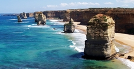

Top sights in Australia
Bondi Beach
Definitively Sydney, Bondi is one of the world’s great beaches: ocean and land collide, the Pacific arrives in great foaming swells, and all people are equal, as democratic as sand. It’s the closest ocean beach to the city centre (8km away), has consistently good (though crowded) waves, and is great for a rough-and-tumble swim (the average water temperature is a considerate 21°C).
Twelve Apostles

The most iconic sight and enduring image for most visitors to the Great Ocean Road, the Twelve Apostles provide a fitting climax to the journey. Jutting out from the ocean in spectacular fashion, these rocky stacks stand as if they've been abandoned to the ocean by the retreating headland. Today only seven 'apostles' can be seen from a network of viewing platforms connected by timber boardwalks around the clifftops.
Sydney Harbour Bridge
Sydneysiders adore their giant 'coathanger'. Opened in 1932, this majestic structure spans the harbour at one of its narrowest points. The best way to experience the bridge is on foot – don't expect much of a view crossing by car or train. Stairs climb up the bridge from both shores, leading to a footpath running the length of the eastern side.